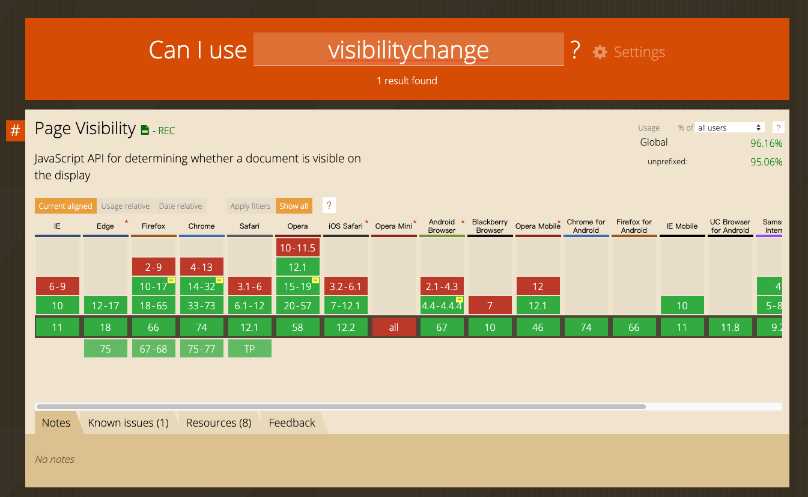

如何监听浏览器Tab页切换
最近公司系统上线比较忙，一直也没有更新，今天是上线的第5天，最近一直在跟踪bug。
今天忙里偷闲，突然想起之前公司的代码规范考试的时候，系统会监听你是否还停留在当前的tab页上
一直好奇如何实现监听浏览器的Tab页，今天大概查了一下。
主要是监听visibilitychange事件。
上Demo
document.addEventListener('visibilitychange',function(){
//浏览器切换事件
//状态判断
if(document.visibilityState=='hidden') {
console.log('切出事件');
}else {
console.log('切入事件');
}
});
在Can i use上查到的兼容性。
大部分的主流较新的浏览器都可以支持。

回答了多年的疑惑，撒花🎉🎉🎉🎉🎉